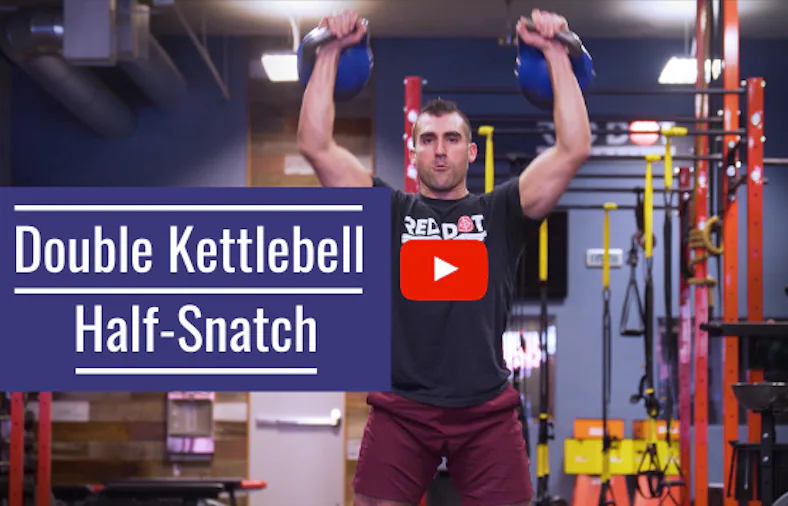

B256 · Making powerful gains with the Double Kettlebell Half-Snatch
Hi {first_name}!
As we head into the weekend, I wanted to share a video I put together covering one particular lift (actually it's a combination of two lifts in one!) that has been a go-to of mine since my early days of kettlebell training.
The Double Kettlebell Half Snatch is an intermediate level kettlebell movement that is both a power and a strength-based exercise. Most people are surprised at how well-rounded of a training effect they can experience in such a short amount of time, number of sets, reps, and load simply by the nature of this integrated movement.
The goal is to move the kettlebell powerfully from high up under the thighs into the overhead lockout position with power and control.
Click here to see the full video demonstration.  With this unique movement, the raising phase is the most technically critical part - it involves snatching into the overhead position. This is then followed by lowering down to chest level, and then dropping out of the Rack Position as you would a Clean.
One added benefit, beyond the strength component of this type of lowering phase, is that the lift has a reduced level of complexity compared to a full snatch. This is why if you are making the transition into either double kettlebell training, or snatch training as a whole, the Half Snatch can be a great option.
Click here to see the full video demonstration.
I hope you have a fantastic weekend and give this movement a try!
Mike
P.S. To join a private free group I call the "Training Room" where we dive into your questions live on Zoom on training, performance, programming, holistic health, and fitness business please reply to this email expressing to be put on the list. So far we've been having an amazing group of like minded and hearted people from around the world connect, grow together, and get burning questions answered. |